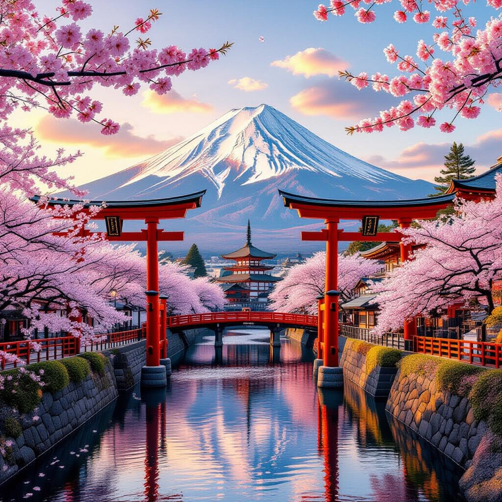
Bienvenido a Nihongo no Sekai
¡Bienvenido a Nihongo no Sekai, un espacio donde el idioma japonés y su cultura se entrelazan! Aquí aprenderás sobre sus sistemas de escritura (Hiragana, Katakana, Kanji y Rōmaji), frases básicas y consejos culturales, mientras disfrutas de imágenes representativas del Japón tradicional.
Sistemas de Escritura
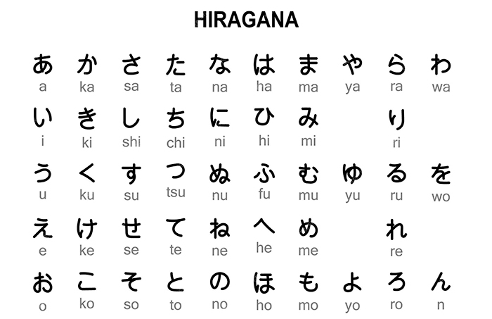
Hiragana
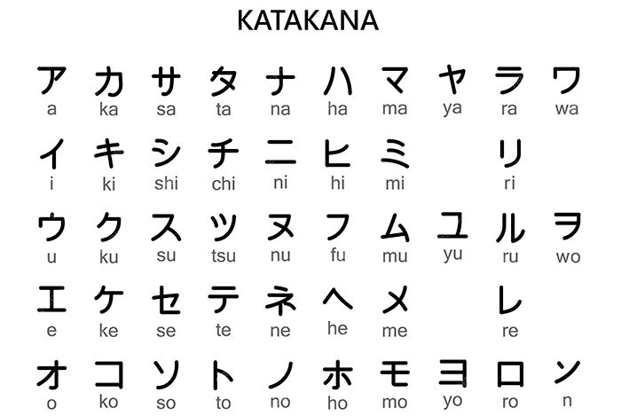
Katakana
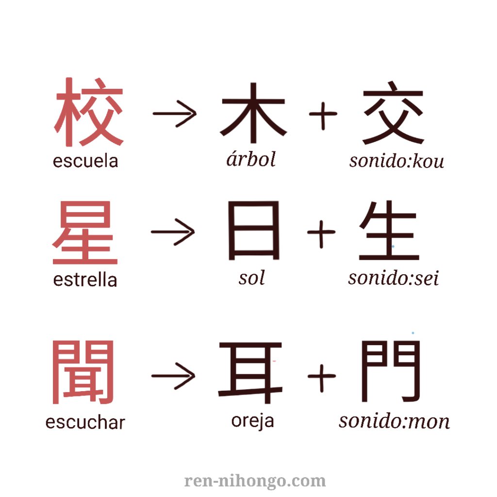
Kanji
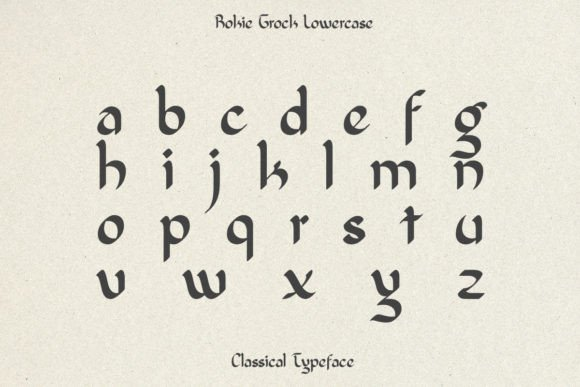
Rōmaji
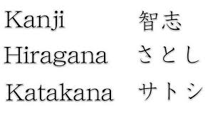
Todos los sistemas
Cultura Japonesa
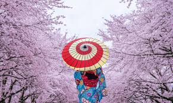
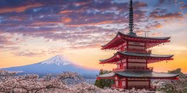
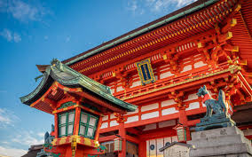
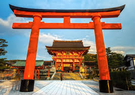
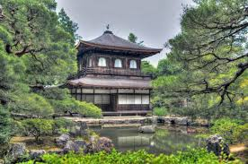
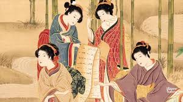